We gaan een simpele game maken genaamd "Space Invaders". Het doel van het spel is om met de pijltjes op je toetsenbord je ruimteschip van links naar rechts te bewegen en doormiddel van de spatiebalk kogels af te schieten naar de aliens om deze te verslaan.

Hier hebben we 3 codeertalen voor nodig, namelijk
- CSS
- HTML
- Javascript
STAP 1 - Mappenstructuur
We hebben een code-editor nodig. In de workshop gebruiken we Visual studio code.
1.1 Download bronbestand
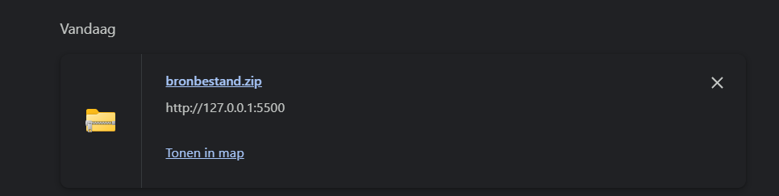Unzip het bestand en plaats dit bestand dan op je bureaublad.
1.2 bestand openen in VS code
Sleep het bestand van op je bureaublad naar het VS code logo dat ook op je bureaublad staat.
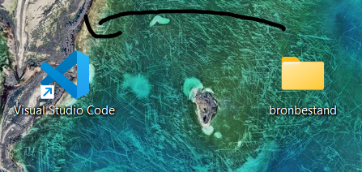Je zou nu deze mappenstructuur in vs code moeten zien.
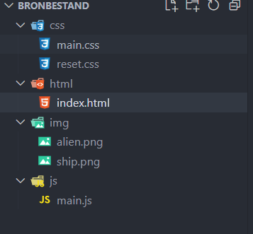Alle bestanden zouden leeg moeten zijn behalve de reset.css file en in de map img zouden 2 afbeeldingen moeten zitten, namelijk alien.png en ship.png.
1.3 Installeer "live-server" extensie
Ga naar extensies (links op vs code) en zoek naar de extensie live-server.
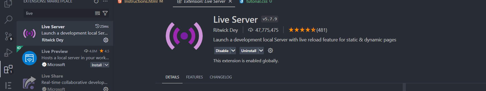Klik nu rechts onderaan op Go Live. Een blanco pagina zou nu moeten openen.
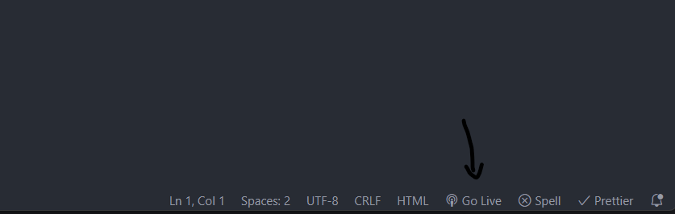STAP 2 - HTML & CSS
2.1 HTML
Ga naar je index.html file en plak onderstaande code hierin en bewaar dit bestand.
<!DOCTYPE html>
<html lang="en">
<head>
<meta charset="UTF-8" />
<meta name="viewport" content="width=device-width, initial-scale=1.0" />
<title>Space invaders</title>
<link rel="stylesheet" href="/css/reset.css" />
<link rel="stylesheet" href="/css/main.css" />
</head>
<body>
<header></header>
<main>
<h1>Space Invaders</h1>
<canvas id="board">
</canvas>
</main>
<footer></footer>
<script src="/js/main.js"></script>
</body>
</html>
Je zou nu dit moeten zien op de pagina die je hebt geopend via live server
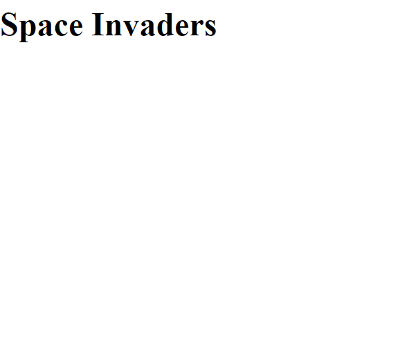2.2 CSS
We gaan nu onze css toevoegen. Dit zal ervoor zorgen dat ons speelbord zichtbaar wordt en onze titel in het midden staat.
Ga in vs code naar je css folder en open main.css en plak onderstaande code hierin en bewaar dit bestand.
body {
text-align: center;
font-family: "Roboto", sans-serif;
display: flex;
align-items: center;
justify-content: center;
}
#board {
background-color: black;
}
Je zou nu dit moeten zien in je browser.
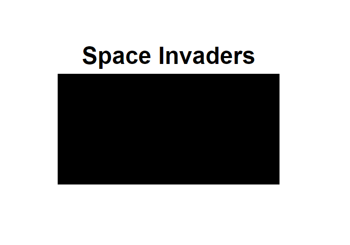Als je wil kan je nu de kleur van je bord veranderen. Doe dit door de background-color te veranderen van het #board
Bijvoorbeeld, we veranderen de kleur van het bord naar rood.
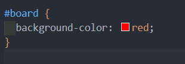 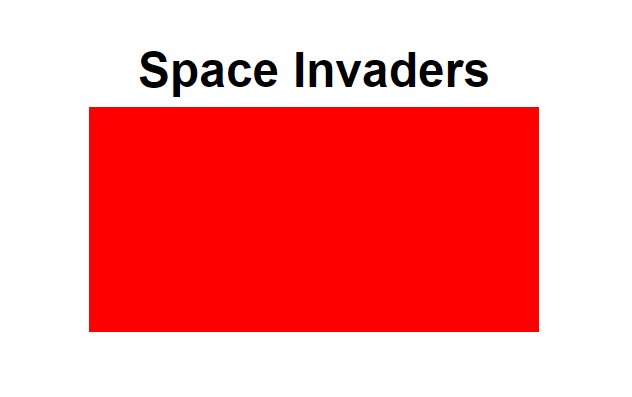STAP-3 Javascript
3.1 Tekenen van het speelbord
Vanaf nu werken we alleen nog maar in de main.js file.
We gaan beginnen met het bepalen van de grootte van ons speelbord.
// de grootte van een tegel en het aantal rijen en kolommen op het speelbord
// tegelgrootte is in dit geval 32px
let tileSize = 32;
let rows = 16;
let columns = 16;
// variabelen voor het speelbord en de grootte ervan
let board;
let boardWidth = tileSize * columns;
let boardHeight = tileSize * rows;
let context;
In dit geval is ons speelbord verdeeld in 16 rijen en 16 kolommen. 1 vakje is 32 pixels groot. dus 1 kolom en 1 rij zijn 16 x 32 = 512 pixels groot
In het volgende stuk gaan we gebruik maken van een functie (Uitleg hiervan wordt in de workshop gegeven).
Onder onze variabelen plaatsen we deze functie en roepen we hem ook direct op.
function start() {
// Vind het speelbord en stel de grootte ervan in
board = document.getElementById("board");
board.width = boardWidth;
board.height = boardHeight;
context = board.getContext("2d");
}
start();
Deze functie zal ervoor zorgen dat het speelbord getekend wordt.
Je gaat nu in de browser dit op je scherm zien.
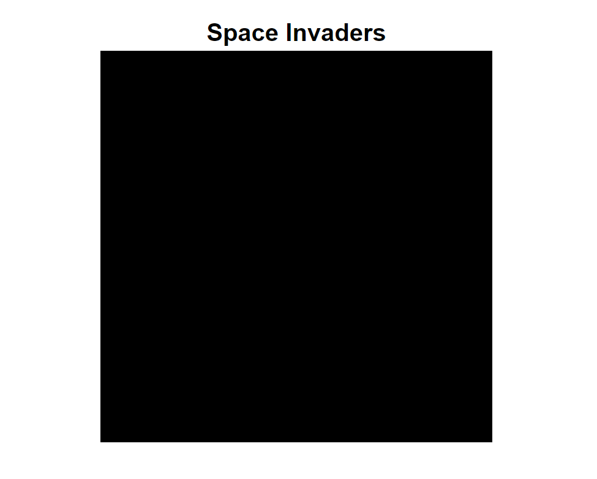Proficiat! Het speelbord is getekend! Op naar de volgende stap!
3.2 Tekenen van het schip
Onder de variabelen van het speelbord, bepalen we de variabelen van ons ruimteschip.
// variabelen voor het ruimteschip
let shipWidth = tileSize * 2;
let shipHeight = tileSize;
let shipX = (tileSize * columns) / 2 - tileSize;
let shipY = tileSize * rows - tileSize * 2;
// het ruimteschip object met positie en grootte
let ship = {
x: shipX,
y: shipY,
width: shipWidth,
height: shipHeight,
};
// Definieer variabelen voor het ruimteschipafbeelding en de snelheid van het ruimteschip
let shipImg;
// schip zal 1 "tilesize" verschuiven bij het drukken van een pijltjestoets
let shipVelocityX = tileSize;
Nu dat de variabelen van ons schip er in staan, moeten we net zoals ons speelbord het schip tekenen
We voegen onder onze al bestaande code in de start functie deze code toe. onze start functie ziet er nu zo uit.
function start() {
// Vind het speelbord en stel de grootte ervan in
board = document.getElementById("board");
board.width = boardWidth;
board.height = boardHeight;
context = board.getContext("2d");
// Laad afbeeldingen van het ruimteschip en aliens
shipImg = new Image();
shipImg.src = "/img/ship.png";
shipImg.onload = function () {
// Tekenen van het ruimteschip
context.drawImage(shipImg, ship.x, ship.y, ship.width, ship.height);
};
}
Je ziet nu dit in de browser.
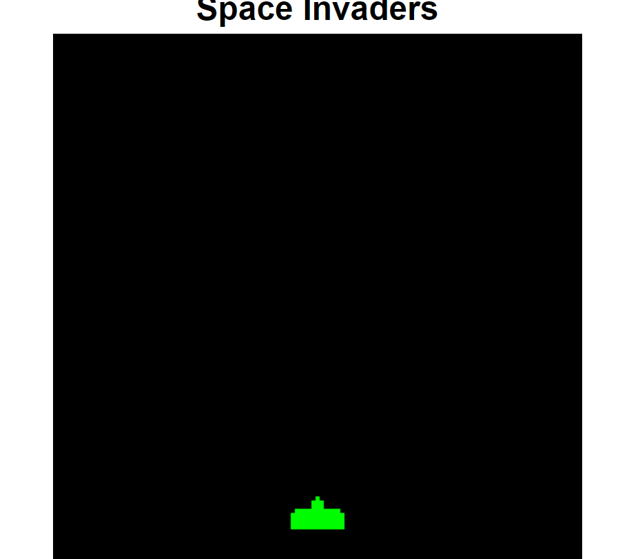3.3 Bewegen van het schip
Om het schip te laten bewegen schrijven we een nieuwe functie genaamd moveShip
.
function moveShip(e) {
if (e.code == "ArrowLeft" && ship.x - shipVelocityX >= 0) {
ship.x -= shipVelocityX;
} else if (
e.code == "ArrowRight" &&
ship.x + shipVelocityX + ship.width <= board.width
) {
ship.x += shipVelocityX;
}
}
de e tussen haakjes is een afkorting voor event. Dus als de event code gelijk is aan ArrowLeft dan zal het schip naar links bewegen en voor rechts gebruiken we dezelfde logica.
Als je het schip beweegt moet de browser updaten. Hiervoor schrijven we een nieuwe functie genaamd update. Deze mag onder de moveShip functie.
function update() {
// Vraag de browser om een nieuwe frame te tekenen
requestAnimationFrame(update);
// Wis het vorige frame van het speelbord
context.clearRect(0, 0, board.width, board.height);
// Tekenen van het ruimteschip
context.drawImage(shipImg, ship.x, ship.y, ship.width, ship.height);
}
In onze start functie plaatsen we nog extra code helemaal onderaan de functie.
function start() {
// Vind het speelbord en stel de grootte ervan in
board = document.getElementById("board");
board.width = boardWidth;
board.height = boardHeight;
context = board.getContext("2d");
// Laad afbeeldingen van het ruimteschip en aliens
shipImg = new Image();
shipImg.src = "/img/ship.png";
shipImg.onload = function () {
// Tekenen van het ruimteschip
context.drawImage(shipImg, ship.x, ship.y, ship.width, ship.height);
};
// Start de game loop
requestAnimationFrame(update);
// Luister naar toetsaanslagen voor beweging van het ruimteschip en schieten
document.addEventListener("keydown", moveShip);
}
We zien dat we hierbij een eventlistener toevoegen. Dit zorgt ervoor dat we gaan luisteren naar een keydown en wanneer deze de linkse of rechtse pijltjestoets is dan zal de browser hiernaar luisteren en het schip bewegen.
EXTRA
Probeer eens deze lijn code te verwijderen in de update functie. Wat gebeurt er dan?
context.clearRect(0, 0, board.width, board.height);
3.4 Toevoegen van aliens
We beginnen met het toevoegen van onze variabelen van onze aliens. Je mag deze toevoegen onder die van het schip.
// Definieer variabelen voor de aliens
let alienArray = [];
let alienWidth = tileSize * 2;
let alienHeight = tileSize * 1;
// Startcoördinaten voor aliens
let alienX = tileSize;
let alienY = tileSize;
// Variabelen voor afbeeldingen en kenmerken van aliens
let alienImg;
let alienRows = 2;
let alienColumns = 3;
let alienCount = 0;
// Snelheid van de aliens
let alienVelocityX = 1;
Nu onze variabelen gekend zijn maken we nu terug een functie genaamd createAliens die onze aliens zal maken. Deze mag helemaal onderaan toegevoegd worden.
function createAliens() {
for (let c = 0; c < alienColumns; c++) {
for (let r = 0; r < alienRows; r++) {
let alien = {
img: alienImg,
x: alienX + c * alienWidth,
y: alienY + r * alienHeight,
width: alienWidth,
height: alienHeight,
alive: true,
};
alienArray.push(alien);
}
}
alienCount = alienArray.length;
}
Nu gaan we terug onze start functie aanpassen. We voegen onze createAliens functie en onze img voor de aliens toe.
function start() {
// Vind het speelbord en stel de grootte ervan in
board = document.getElementById("board");
board.width = boardWidth;
board.height = boardHeight;
context = board.getContext("2d");
// Laad afbeeldingen van het ruimteschip en aliens
shipImg = new Image();
shipImg.src = "/img/ship.png";
shipImg.onload = function () {
// Tekenen van het ruimteschip
context.drawImage(shipImg, ship.x, ship.y, ship.width, ship.height);
};
alienImg = new Image();
alienImg.src = "/img/alien.png";
// Creëer een groep aliens
createAliens();
// Start de game loop
requestAnimationFrame(update);
// Luister naar toetsaanslagen voor beweging van het ruimteschip en schieten
document.addEventListener("keydown", moveShip);
}
Nu updaten we onze update functie. We voegen dit stuk code toe helemaal onderin de functie. Dit staat dus IN de functie.
for (let i = 0; i < alienArray.length; i++) {
let alien = alienArray[i];
if (alien.alive) {
// Bewegen van aliens en detecteren van aanraken rand van bord
alien.x += alienVelocityX;
if (alien.x + alien.width >= board.width || alien.x <= 0) {
alienVelocityX *= -1;
alien.x += alienVelocityX * 2;
// Verplaats de aliens naar beneden als ze de zijkant raken
for (let j = 0; j < alienArray.length; j++) {
alienArray[j].y += alienHeight;
}
}
// Tekenen van de alien
context.drawImage(alienImg, alien.x, alien.y, alien.width, alien.height);
// Controleer of aliens het ruimteschip raken
}
}
Ga nu terug naar de browser en nu zie je normaal dit scherm.
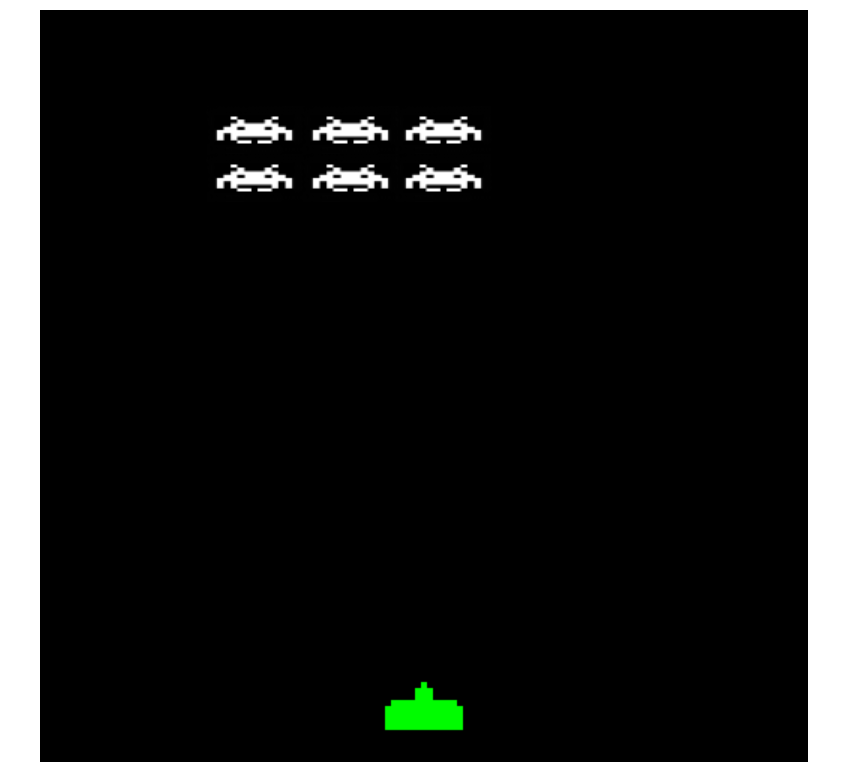Je ziet nu de aliens van links naar rechts bewegen en elke keer ze de rand raken schuiven ze 1 rij naar beneden.
3.5 kogels pew pew
Nu is het tijd om de kogels toe te voegen.
Voeg onder de alien variabelen de variabelen voor de kogels toe.
// Variabelen voor kogels
let bulletArray = [];
let bulletVelocityY = -10;
De volgende stap is onze shoot functie en detectCollision functie toe te voegen.
Doe dit helemaal onderaan.
function shoot(e) {
if (e.code == "Space") {
let bullet = {
x: ship.x + (shipWidth * 15) / 32,
y: ship.y,
width: tileSize / 8,
height: tileSize / 2,
used: false,
};
bulletArray.push(bullet);
}
}
// Functie voor het detecteren van botsingen tussen objecten
function detectCollision(a, b) {
return (
a.x < b.x + b.width &&
a.x + a.width > b.x &&
a.y < b.y + b.height &&
a.y + a.height > b.y
);
}
Voeg nu in de start functie helemaal onderaan onder de eventlistener deze code toe.
// Luister naar toetsaanslagen voor beweging van het ruimteschip en schieten
document.addEventListener("keydown", moveShip);
// key up om ervoor te zorgen dat je de spatiebalk niet ingedrukt kan houden
document.addEventListener("keyup", shoot);
helemaal onderaan de update functie zetten we deze code
// Tekenen van de kogels en detecteren van botsingen met aliens
for (let i = 0; i < bulletArray.length; i++) {
let bullet = bulletArray[i];
bullet.y += bulletVelocityY;
context.fillStyle = "white";
context.fillRect(bullet.x, bullet.y, bullet.width, bullet.height);
for (let j = 0; j < alienArray.length; j++) {
let alien = alienArray[j];
if (!bullet.used && alien.alive && detectCollision(bullet, alien)) {
bullet.used = true;
alien.alive = false;
alienCount--;
score += 100;
}
}
}
// Opruimen van gebruikte kogels
while (
bulletArray.length > 0 &&
(bulletArray[0].used || bulletArray[0].y < 0)
) {
bulletArray.shift();
}
Normaal zou je nu kogels kunnen schieten EN zouden de aliens moeten verslagen worden wanneer ze geraakt worden.
3.6 Alle aliens zijn dood... Wat nu?
Hoera! Alle aliens zijn dood... maar je wilt natuurlijk wel verder spelen.
Voeg deze code toe aan op het einde van je update functie
// Start een nieuw level als alle aliens zijn verslagen
if (alienCount == 0) {
alienColumns = Math.min(alienColumns + 1, columns / 2 - 2);
alienRows = Math.min(alienRows + 1, rows - 4);
alienVelocityX += 0.2;
alienArray = [];
bulletArray = [];
createAliens();
}
Dit zal ervoor zorgen dat er een nieuw EN moeilijker level zal starten wanneer alle aliens dood zijn.
3.7 Game Over :(
De aliens zijn na een tijd te sterk geworden en hebben je schip bereikt.
Normaal zou het dan nu Game Over moeten zijn.
Voeg deze variabele toe onder alle andere variabalen
let gameOver = false;
Voeg onder de requestAnimationFrame(update) in de update functie dit stuk code toe.
// Vraag de browser om een nieuwe frame te tekenen
requestAnimationFrame(update);
// Stop de update als het spel voorbij is
if (gameOver) {
return;
}
Pas nu de for loop aan in de update functie voor het tekenen van de aliens naar dit.
// Tekenen van de aliens
for (let i = 0; i < alienArray.length; i++) {
let alien = alienArray[i];
if (alien.alive) {
// Bewegen van aliens en detecteren van aanraken rand van bord
alien.x += alienVelocityX;
if (alien.x + alien.width >= board.width || alien.x <= 0) {
alienVelocityX *= -1;
alien.x += alienVelocityX * 2;
// Verplaats de aliens naar beneden als ze de zijkant raken
for (let j = 0; j < alienArray.length; j++) {
alienArray[j].y += alienHeight;
}
}
// Tekenen van de alien
context.drawImage(alienImg, alien.x, alien.y, alien.width, alien.height);
// Controleer of aliens het ruimteschip raken
if (alien.y >= ship.y) {
gameOver = true;
}
}
}
Nu gaan we onze moveShip functie bewerken naar dit.
function moveShip(e) {
if (gameOver) {
return;
}
if (e.code == "ArrowLeft" && ship.x - shipVelocityX >= 0) {
ship.x -= shipVelocityX;
} else if (
e.code == "ArrowRight" &&
ship.x + shipVelocityX + ship.width <= board.width
) {
ship.x += shipVelocityX;
}
}
En de shoot functie naar dit
function shoot(e) {
if (gameOver) {
return;
}
if (e.code == "Space") {
let bullet = {
x: ship.x + (shipWidth * 15) / 32,
y: ship.y,
width: tileSize / 8,
height: tileSize / 2,
used: false,
};
bulletArray.push(bullet);
}
}
3.8 Score
Natuurlijk zou je ook graag een score willen bijhouden voor als je je record wilt verbreken of tegen je vrienden speelt.
Voeg eerst een variabele score toe om daarin je score in op te slaan.
Voeg dit toe onderaan al je andere variabalen
let score = 0;
En als laatste voegen we deze code toe aan het einde van de update functie
context.fillStyle = "white";
context.font = "16px courier";
context.fillText(score, 5, 20);
HOERAAAAA!!! het spel is af!